Authors: Johannes Schwandt-Krause, Jan-Niklas Heidkamp, Mohammed El Amine Miloudi, Swarup Deb, Elisabeth Grune, Kenji Watanabe, Takashi Taniguchi, Rico Schwartz, Oliver Kühn, Tobias Korn
Type: experiment · Category: other · PDF: https://arxiv.org/pdf/2608.11988v1
Analysis basis: full PDF text, analyzed in chunks
Topic relevance: quantum measurements 2/5 · analog quantum simulation 1/5 · driven-dissipative phase transition 1/5 · methods for driven-dissipative 1/5
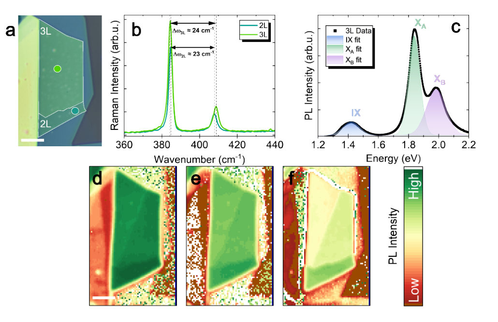
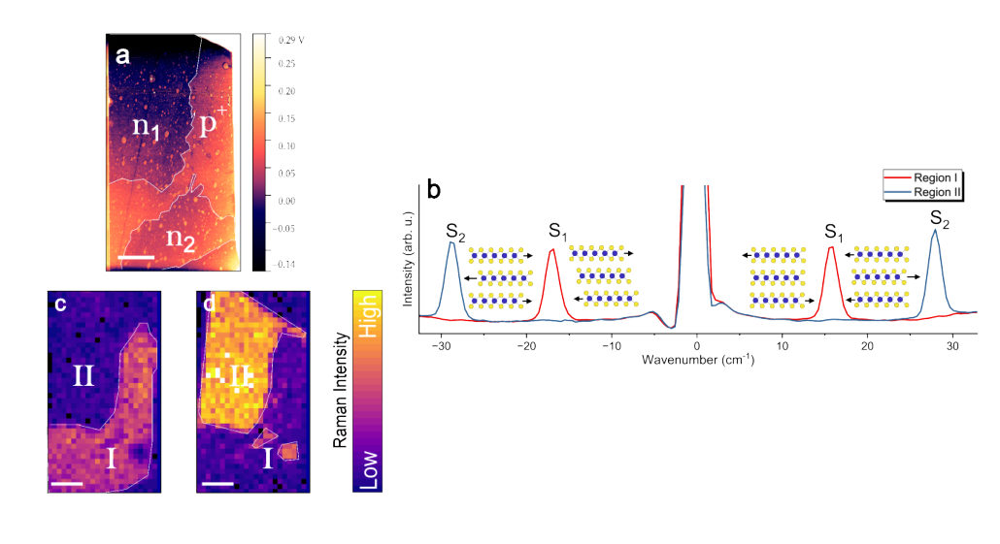
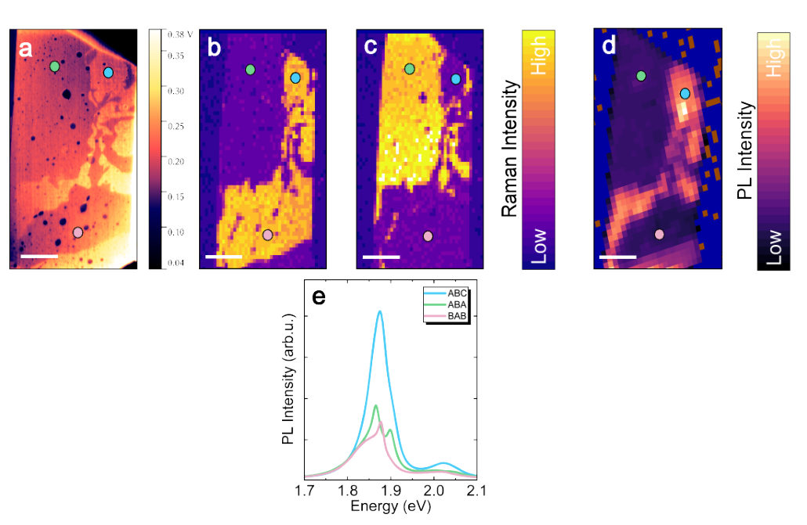
Summary. This work demonstrates that characterizing ferroelectric stacking order in layered $ ext{MoS}_2$ requires combining multiple advanced techniques. KPFM alone fails to distinguish between certain neutral stackings (ABA vs. BAB), but the combination of low-frequency Raman spectroscopy and PL successfully resolves these ambiguities by probing complementary structural, vibrational, and electronic properties.
Why it may be interesting. While not directly quantum information related, the study of polarization switching and structural characterization in 2D materials touches upon emergent collective electronic states and lattice dynamics that are crucial for designing solid-state quantum devices.
Main problem. The core challenge is achieving reliable, non-destructive assignment of the stacking order and ferroelectric polarization state in sliding ferroelectric van der Waals materials like trilayer 3R-MoS2.
Main result. A combined approach using KPFM, low-frequency Raman spectroscopy, and photoluminescence is necessary because no single technique can uniquely determine the local structural or electronic configuration of the material.
Method. The study combines Kelvin-probe force microscopy (KPFM) to map surface potential, low-frequency Raman spectroscopy to probe shear modes sensitive to interlayer coupling, and photoluminescence (PL) to analyze excitonic signatures.
Model / system. The system is exfoliated trilayer 3R-MoS2 flakes on an hBN substrate. The analysis compares different stacking configurations (e.g., ABA vs. BAB), which exhibit distinct physical properties despite some being indistinguishable by electrostatic measurements alone.
Key observables. Surface potential contrast ($ ext{KPFM}$); low-frequency Raman shear mode intensities ($ ext{S}1$ and $ ext{S}2$); A-exciton spectral line shapes ($ ext{PL}$).
Important parameters / regimes. The distinction between zero net polarization stackings (ABA/BAB) versus polar ones (ABC), and the failure of simple bond-polarizability models to explain all observed Raman shifts.
Assumptions / limitations. Individual techniques are insufficient; a complementary, multi-modal spectroscopic-scanning-probe approach is required for full characterization.
Figures summary. Figures compare KPFM maps with Raman intensity maps across different domains (I vs II) and show PL spectra taken from representative stacking regions ($ ext{ABC}$, $ ext{ABA}$, $ ext{BAB}$) to demonstrate the unique signatures of each technique.
Paper structure. The paper establishes the need for characterization, presents data showing KPFM ambiguity between certain stackings (ABA/BAB), then uses Raman spectroscopy to resolve this degeneracy by observing different shear modes. Finally, PL is used to further distinguish between these spectroscopically similar but structurally distinct domains.
Sliding ferroelectricity in parallel-stacked two-dimensional van der Waals materials enables a broad range of novel device concepts, but exploiting it requires reliable, non-destructive assignment of the underlying stacking order and polarization state. Here, we combine Kelvin-probe force microscopy (KPFM) with low-frequency Raman spectroscopy to probe the polarization domains and stacking configurations of a exfoliated trilayer 3R-MoS$_{2}$ flake on a hBN substrate. We find that ABA and BAB - both stackings with zero net polarization - are indistinguishable in KPFM, yet show drastically different low-frequency shear modes. This observation is reproduced across multiple flakes and is corroborated by low-temperature photoluminescence. Notably, the standard bond-polarizability model does not account for the difference in shear-mode activity between the ABA and BAB configurations, indicating that the interlayer Raman response of these stackings is governed by physics beyond a simple polarizability picture. Our results show that none of the here-used individual techniques alone is sufficient to assign sliding-ferroelectric stacking order and motivate a combined spectroscopic-scanning-probe approach.
Authors: Zhihang Xu, Detian Yang, Ping Zhu, Ruoxian Sun, Xiaoyang Cai, Yanqun Guo, Chuanbing Cai
Type: experiment · Category: strongly correlated electrons · PDF: https://arxiv.org/pdf/2608.11707v1
Analysis basis: full PDF text, analyzed in chunks
Topic relevance: driven-dissipative phase transition 2/5 · correlated / nonlocal dissipation 1/5
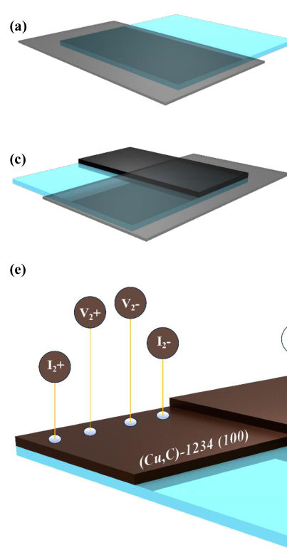
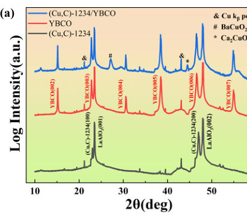
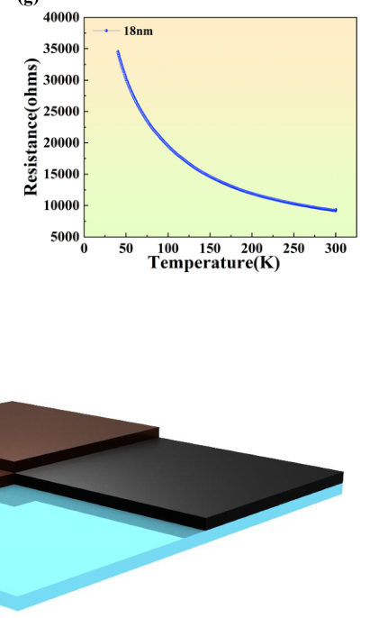
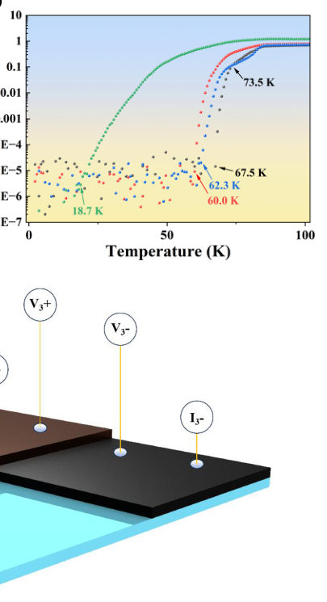
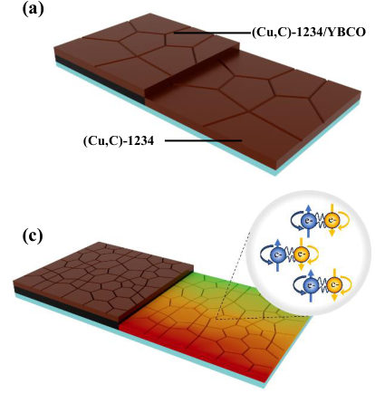
Summary. The paper investigates the interplay between thickness-driven Superconductor-Insulator Transition (SIT) and proximity effects in $ ext{(Cu,C)-1234/YBCO}$ heterostructures. By varying the top layer thickness, they observed that while the material undergoes SIT when isolated, coupling it to YBCO restores superconductivity over a specific thickness range. This work establishes a platform for studying interfacial superconducting coupling in high-temperature superconductors.
Why it may be interesting. This work provides experimental evidence on how interfacial coupling can stabilize superconductivity against intrinsic dimensional confinement effects in complex oxide systems, which is relevant for understanding quantum phase transitions in artificial superconducting junctions.
Main problem. The study investigates the interplay between thickness-driven Superconductor-Insulator Transition (SIT) and superconducting proximity effects in high-temperature cuprate heterostructures.
Main result. Reducing the thickness of the top layer causes an SIT, but superconductivity is re-established across the interface with YBCO over a finite range before being suppressed again at very small thicknesses.
Method. The research employed Pulsed Laser Deposition (PLD) to fabricate $ ext{(Cu,C)-1234/YBCO}$ heterostructures and characterized them using four-probe electrical transport measurements as a function of film thickness.
Model / system. The physical system is an epitaxial heterostructure composed of two cuprate superconductors: $ ext{YBCO}$ (bottom layer) and $ ext{(Cu,C)-1234}$ (top layer), grown on an LAO substrate. The study explores the superconducting coupling at this interface.
Key observables. Temperature-dependent resistance ($ ho$-$T$ curves), superconducting transition temperature ($T_{c0}$), and normal state resistance as a function of film thickness.
Important parameters / regimes. Film thicknesses, particularly varying $ ext{(Cu,C)-1234}$ thickness from $188 ext{ nm}$ down to $1.2 ext{ nm}$.
Assumptions / limitations. The observed recovery mechanism suggests that the robust superconducting state of YBCO helps reestablish long-range phase coherence in the ultrathin $ ext{(Cu,C)-1234}$ layer.
Figures summary. Figures illustrate the growth process and test circuits; key results show how $T_{c0}$ drops with decreasing thickness for isolated films (SIT) but recovers when coupled to YBCO before dropping again at the thinnest limit.
Paper structure. The paper follows a structure of fabrication ($ ext{PLD}$ growth), structural confirmation ($ ext{XRD}$, $ ext{STEM}/ ext{FFT}$), and systematic electrical characterization across varying thicknesses, comparing isolated film behavior to heterostructure performance.
Superconducting proximity effect and related thickness-driven property evolution remain an important issue in understanding high temperature superconductors. Among proximity systems, superconductor-superconductor (S-S') is special for the existence of intrinsic superconductivity in both materials. Such platform allows the different superconducting orders to compete, couple and reconstruct at the interface. In this paper, (Cu,C)-1234/YBCO heterostructure grown on LAO (001) with fixed thickness of bottom YBCO layer as 150 nm and varied thickness of top (Cu,C)-1234 layer as 188nm, 87 nm, 18nm and estimated 1.2 nm were fabricated and component films were preserved. Electrical transport characterization indicated that as the thickness decrease the (Cu,C)-1234 film degrades and underwent the superconductor-insulator transition (SIT) from thicker to less than 18 nm. In contrast, superconductivity is re-established in transport measurements when the insulating (Cu,C)-1234 layer is coupled to superconducting YBCO As the (Cu,C)-1234 thickness is further reduced to approximately 1.2 nm, the recovered superconductivity is strongly suppressed. The observed thickness dependence is consistent with a scenario in which interfacial coupling restores superconductivity over a finite thickness range before increasing disorder and dimensional confinement dominate in the two-dimensional limit. This work establishes a promising platform for investigating interfacial coupling between cuprate superconductors and provides new insight into the superconducting proximity effect in high-temperature superconducting heterostructures.
Authors: Junwen Zhao, Zhiming Pan, Kang Yang, Congjun Wu
Type: theory · Category: other · PDF: https://arxiv.org/pdf/2608.12221v1
Analysis basis: full PDF text, analyzed in chunks
Topic relevance: Keldysh / 2PI / non-Gaussian methods 1/5 · analog quantum simulation 1/5 · quantum measurements 1/5
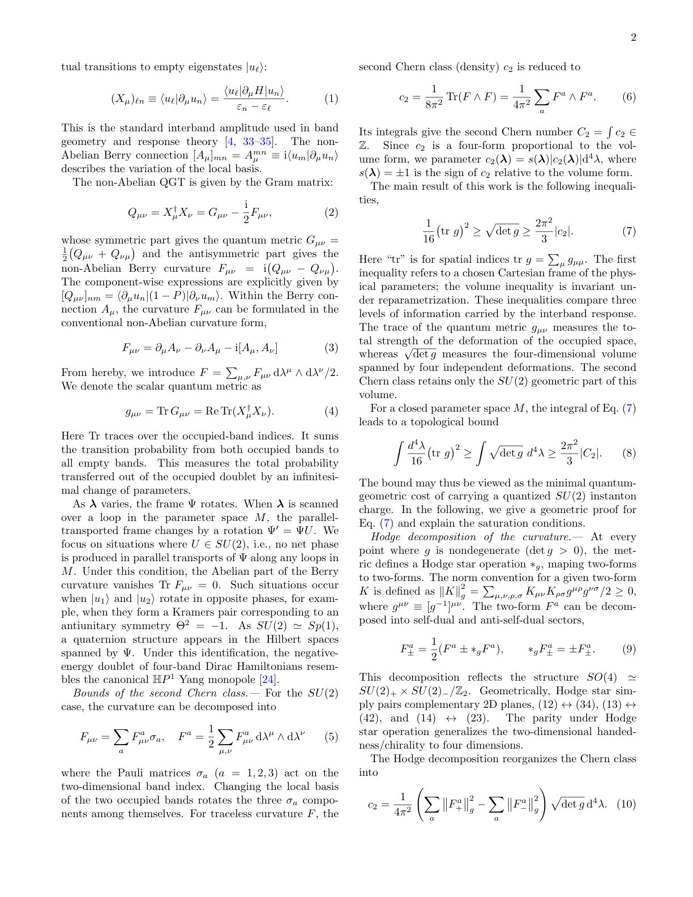
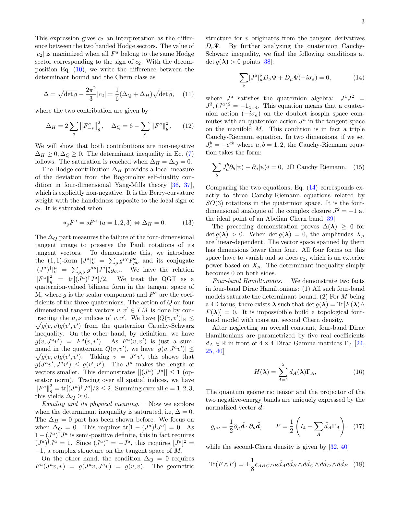
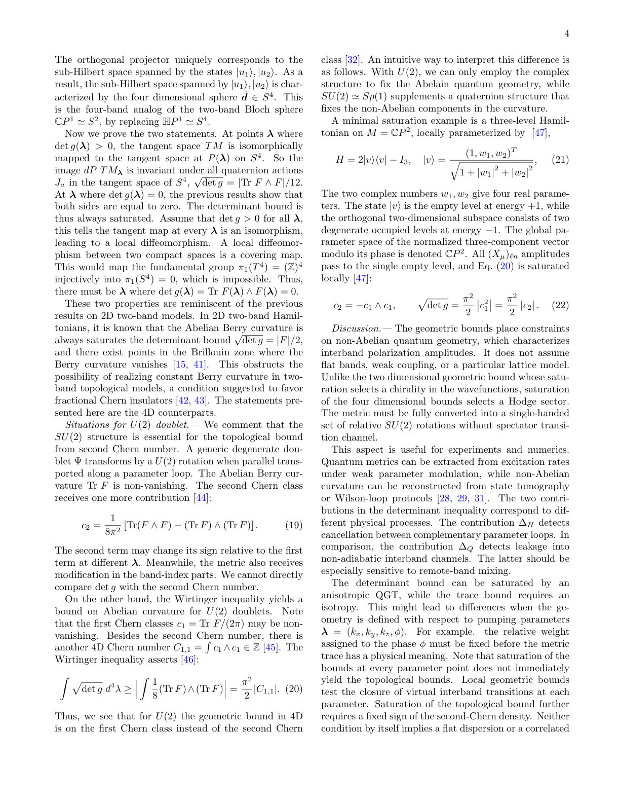
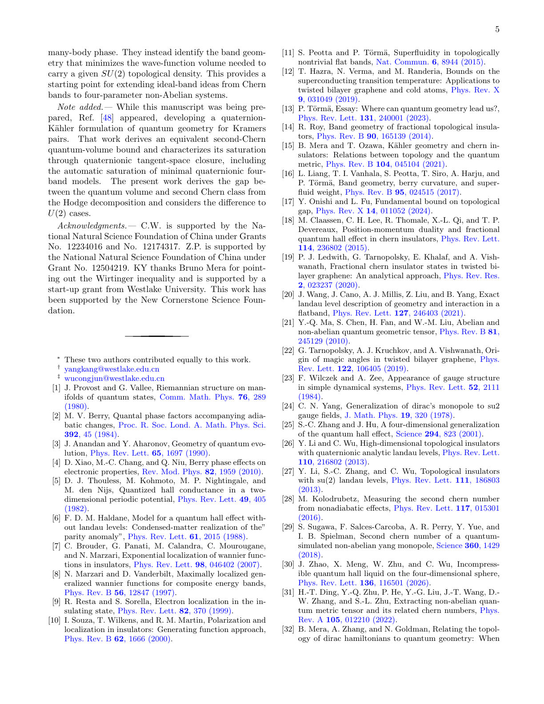
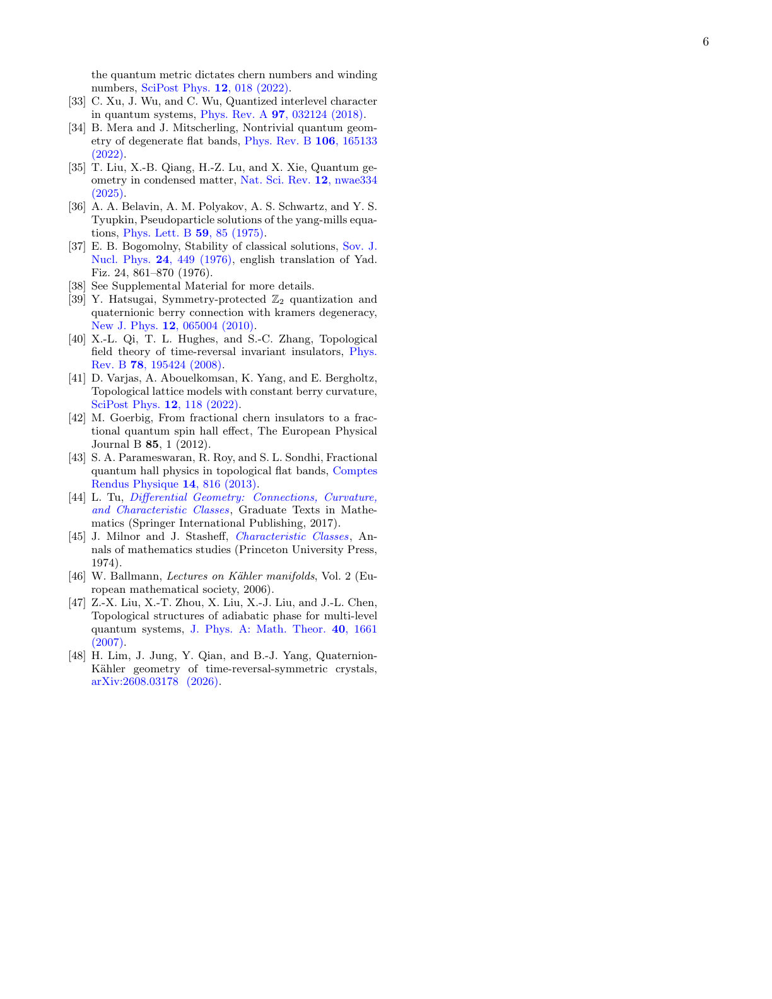
Summary. This theoretical paper investigates the geometric constraints imposed by non-Abelian quantum geometry on degenerate energy bands. It derives key inequalities linking the metric tensor to the second Chern class, showing that when these bounds are saturated, the parameter space must possess highly structured geometries like quaternion Kähler manifolds. This provides a powerful tool for characterizing topological phases in condensed matter systems.
Why it may be interesting. This work provides deep mathematical connections between topological invariants ($c_2$) and the geometry of parameter space metrics, which is crucial for understanding robust topological phases in condensed matter systems.
Main problem. The study derives geometric bounds for the quantum metric related to the second Chern class ($c_2$) in non-Abelian quantum geometry.
Main result. The paper establishes key inequalities relating $ ext{tr } g$, $\sqrt{\det g}$, and $|C_2|$, showing that saturation of these bounds implies specific geometric structures like quaternion Kähler manifolds or complex structures.
Method. The analysis uses the Quantum Geometric Tensor (QGT) derived from band structure properties, employing Hodge decomposition and algebraic identities involving gauge fields to derive inequalities.
Model / system. The focus is on doubly degenerate energy levels characterized by $ ext{SU}(2)$ gauge structures within a four-dimensional parameter space ($M$). Examples include four-band Dirac Hamiltonians.
Key observables. Quantum metric ($ ext{tr } g$), Non-Abelian Berry curvature ($F_{\mu u}$), and the Second Chern class density ($ ext{Tr}(F \wedge F)$).
Important parameters / regimes. The dimensionality of the parameter space (4D) and the gauge group structure ($ ext{SU}(2)$ vs $ ext{U}(2)$).
Assumptions / limitations. The analysis assumes gapped, doubly degenerate band structures and relies on comparing geometric constraints derived from different symmetry groups.
Paper structure. The paper progresses by defining the QGT and its components, deriving the central determinant inequalities using algebraic identities, analyzing the conditions for saturation (which link to specific geometric structures), and finally comparing results between $ ext{SU}(2)$ and $ ext{U}(2)$ cases.
We study the quantum geometry of doubly degenerate energy levels in a four-dimensional parameter space. For degenerate pairs with $SU(2)$ gauge structures, the quantum geometry obeys $\big(\textrm{tr } g\big)^2/16\geq\sqrt{\det g}\geq |\textrm{Tr}(F\wedge F)|/12$. The first inequality characterizes the anisotropy in the metric. The second determinant inequality measures the self-duality of the curvature under Hodge star operation and the inter-level processes that do not close under the three $SU(2)$ rotations of the doubly degenerate levels. The saturation of the determinant bound induces a quaternion Kähler structure on the four-dimensional parameter space, analogous to the complex structure induced by the ideal-band condition in two-dimensional Chern insulators. As examples, four-band Dirac Hamiltonians automatically saturate the determinant bound and possess a topological zero in $\textrm{Tr}(F\wedge F)$. We discuss the comparison to degenerate pairs with $U(2)$ gauge structures.
Authors: Balázs Nagyfalusi, Alvaro Bermejillo-Seco, Linde de Jong, Ritesh Das, Yaroslav M. Blanter, Herre S. J. van der Zant, Amador Garcia-Fuente, and Jaime Ferrer
Type: theory · Category: statistical mechanics · PDF: https://arxiv.org/pdf/2608.11356v1
Analysis basis: full PDF text, analyzed in chunks
Topic relevance: Frenkel-Kontorova 1/5 · analog quantum simulation 1/5 · methods for driven-dissipative 1/5
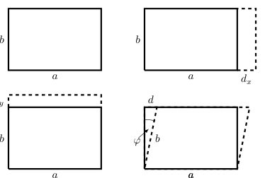
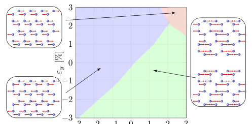
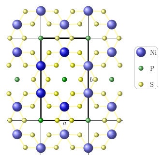
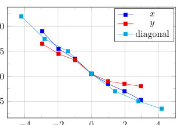
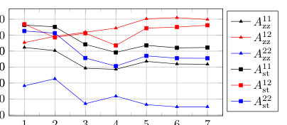
Summary. This paper establishes a comprehensive first-principles framework to quantify magnetoelastic coupling in 2D magnets using strain derivatives of exchange interactions. By applying this method to $ ext{NiPS}_3$ and $ ext{CrPS}_4$, the authors demonstrate that while both materials show magnetostriction, $ ext{CrPS}_4$ exhibits significantly stronger, anisotropic coupling, allowing external strain to robustly control its magnetic phase transitions.
Why it may be interesting. The explicit, quantitative link between lattice strain and magnetic phase transitions is highly relevant. Understanding how external mechanical stress can tune quantum ground states or critical temperatures provides a pathway for designing novel spintronic devices.
Main problem. The study develops a first-principles framework to microscopically link spin interactions (magnetism) with elastic response (lattice structure) by quantifying magnetoelastic coupling in 2D magnets.
Main result. The work distinguishes between two regimes: $ ext{NiPS}_3$ shows weak, isotropic coupling, while $ ext{CrPS}_4$ exhibits strong, anisotropic coupling that allows strain to drive transitions between different magnetic phases (e.g., spin-spiral to ferromagnetic).
Method. Calculations use DFT to derive strain derivatives of exchange interactions, which are then incorporated into a strain-dependent Heisenberg model solved via Monte Carlo simulations.
Model / system. The system involves monolayer magnets ($ ext{NiPS}_3$ and $ ext{CrPS}_4$) modeled by a strain-dependent Heisenberg Hamiltonian. The total elastic energy is expanded to second order in strain, incorporating magnetic contributions derived from exchange coupling changes.
Key observables. Magnetostriction, renormalization of the elastic tensor ($A_{ij}$), critical temperatures ($T_c$), and the stability/phase diagram of magnetic ground states (FM vs. SS).
Important parameters / regimes. Strain ($\varepsilon$), Hubbard $U$ correction in DFT, and the magnitude of exchange couplings ($J_{ij}$).
Assumptions / limitations. The derivation retains only the leading contribution from isotropic exchange interactions; calculations are performed assuming a fixed monolayer thickness.
Figures summary. Figures illustrate possible unit cell deformations under strain, show magnetic phase diagrams mapping ground states vs. applied strain ($\varepsilon_x, \varepsilon_y$), and plot $T_c$ dependence on strain.
Paper structure. The paper progresses from developing the general theory of magnetoelastic coupling (Section I), detailing the DFT/MC computational methods for both electronic structure and elasticity (Section II), before applying this unified framework to analyze $ ext{NiPS}_3$ and $ ext{CrPS}_4$ separately.
We develop a first-principles framework for magnetoelastic coupling in two-dimensional magnets based on a strain-dependent Heisenberg model. In this approach, strain derivatives of the exchange interactions provide direct access to magnetostriction and to the magnetic renormalization of the elastic tensor, establishing a microscopic link between spin interactions and elastic response. We apply the method to monolayer NiPS$_3$ and CrPS$_4$, which exhibit contrasting magnetoelastic behavior. NiPS$_3$ shows weak and nearly isotropic spin-lattice coupling, consistent with a robust zigzag antiferromagnetic ground state. In contrast, CrPS$_4$ displays strong anisotropic coupling, leading to strain-driven transitions between spin-spiral and ferromagnetic phases and significant changes in the critical temperature and elastic response. Our results demonstrate a general route to quantify magnetoelastic effects in low-dimensional magnets and highlight CrPS$_4$ as a promising platform for strain engineering of magnetic order.
Authors: Dmitrii V. Semenok, Pedro N. Ferreira, Di Zhou, Fabian Jőbstl, Andrey V. Sadakov, Kirill S. Pervakov, Burkhan I. Massalimov, Toni Helm, Ryosuke Akashi, Vladimir M. Pudalov, Viktor V. Struzhkin, Christoph Heil, Ivan A. Troyan
Type: both · Category: other · PDF: https://arxiv.org/pdf/2608.11428v1
Analysis basis: full PDF text, analyzed in chunks
Topic relevance: Keldysh / 2PI / non-Gaussian methods 1/5 · quantum measurements 1/5
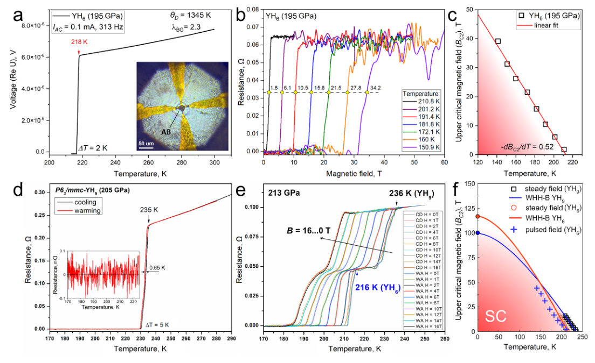
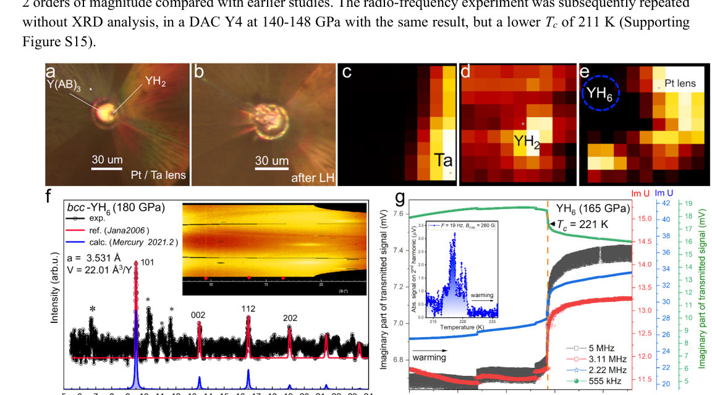
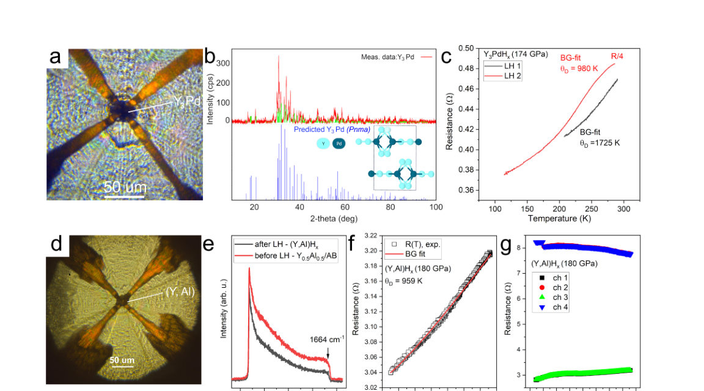
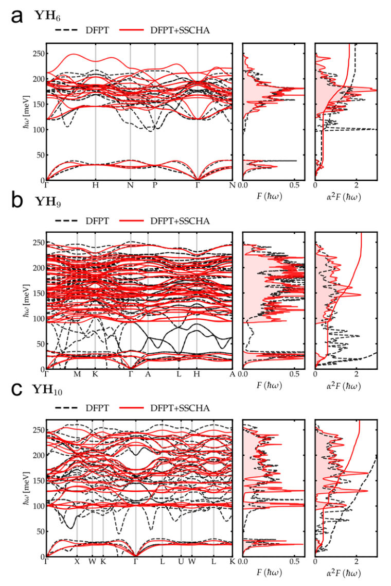
Summary. This work comprehensively re-examines yttrium superhydrides using multiple experimental techniques and advanced theoretical calculations. The findings consistently point to limitations in the superconducting state of these binary compounds, particularly arguing against room-temperature superconductivity based on measured critical fields and calculated $T_c$ reductions.
Why it may be interesting. While focused on superconductivity rather than quantum information, the rigorous application of advanced many-body theory (Migdal-Eliashberg) combined with high-pressure experimental diagnostics provides a model for testing fundamental condensed matter theories under extreme conditions.
Main problem. To re-investigate the superconducting potential of yttrium polyhydrides ($ ext{YH}6$, $ ext{YH}_9$, and $ ext{YH}$) under high pressure, specifically addressing claims of room-temperature superconductivity.
Main result. The combination of advanced measurements (pulsed fields, RF susceptibility) and theoretical calculations strongly disfavors the existence of room-temperature superconductivity in binary yttrium superhydrides.
Method. A combined approach using experimental techniques like pulsed-field magnetometry, contactless radio-frequency AC susceptibility, and electrical transport measurements, alongside sophisticated first-principles calculations (DFT, Migdal-Eliashberg theory).
Model / system. The study focuses on the superconducting properties of yttrium hydrides ($ ext{YH}_x$) synthesized and tested within Diamond Anvil Cells under pressures up to 213 GPa.
Key observables. Superconducting transition temperature ($T_c$), upper critical magnetic field ($ ext{B}_{c2}(T)$), AC magnetic susceptibility (field screening), and normal-state magnetoresistance.
Important parameters / regimes. Pressure range of 140–213 GPa; superconducting transitions observed at $T_c \approx 218-237$ K for $ ext{YH}_6$ and $ ext{YH}_9$.
Assumptions / limitations. The theoretical modeling incorporates anharmonic effects, which are crucial in reducing the predicted $T_c$ of $ ext{YH}_{10}$ to a more realistic range.
Figures summary. Figure 1 shows electric transport measurements ($R(T)$ vs. T and B) for $ ext{YH}_6$; Figure 2 details RF transmission measurements confirming superconductivity in $ ext{YH}_6$.
Paper structure. The paper systematically combines experimental characterization (transport, RF, pulsed fields) to map out the superconducting phase diagram of $ ext{YH}_x$, followed by theoretical calculations that refine and constrain the predicted critical temperatures.
Yttrium polyhydrides are benchmark materials in high-pressure superconductivity, yet several key properties of the Y-H system remain insufficiently characterized. Here we combine contact transport, contactless radio-frequency measurements, pulsed-field experiments, and first-principles calculations to reinvestigate YH$_6$, YH$_9$, and YH$_{10}$ in the pressure range 140-213 GPa. Yttrium hydrides YH$_6$ ($\textit{$T_c$}$ = 218-221 K) and YH$_9$ ($\textit{$T_c$}$ = 235-237 K) demonstrate narrow superconducting transitions ($\textit{$Δ$T$c$}$ = 2-5 K), approaching the limit imposed by thermal fluctuations. Pulsed-field measurements on YH$_6$ up to 60 T establish an extended superconducting phase diagram with a linear slope $\textit{dB$$/dT}$ = -0.52 T/K, pronounced transition broadening above 30 T, and negligible normal-state magnetoresistance. We report the radio-frequency AC susceptibility study of YH$_6$, providing evidence for superconductivity via high-frequency field screening in a contactless geometry. Experiments involving Pd incorporation, Pd thin-film sputtering, and Al alloying show strong suppression of high-temperature superconductivity, with no transitions detected above 78-120 K. Finally, using density-functional theory with the stochastic self-consistent harmonic approximation, superconducting density-functional theory, and full-bandwidth Migdal-Eliashberg calculations, we show that anharmonic effects substantially reduce the predicted $\textit{$T_c$}$ of cubic YH$_{10}$ to approximately 260-270 K. These results strongly disfavor room-temperature superconductivity in binary yttrium superhydrides.
Authors: Sadeed Hameed, Aditya Kumar, Chengjie Yu, Aravind P. Balan, Xinran Wang, Lichuan Zhang, Yuriy Mokrousov, Mathias Kläui
Type: both · Category: other · PDF: https://arxiv.org/pdf/2608.11389v1
Analysis basis: full PDF text, analyzed in chunks
Topic relevance: quantum measurements 1/5
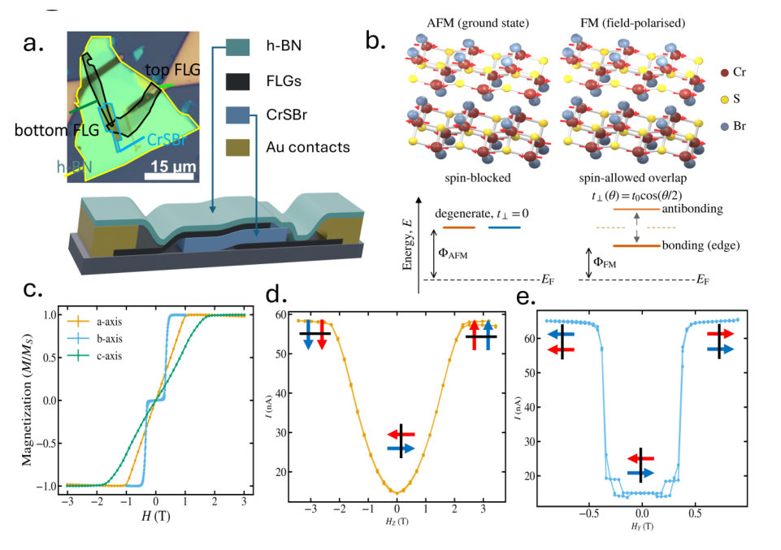
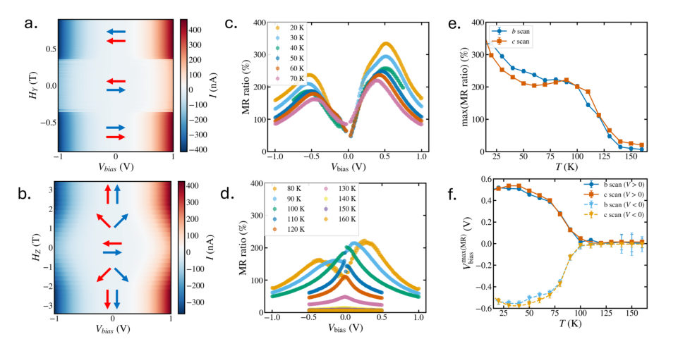
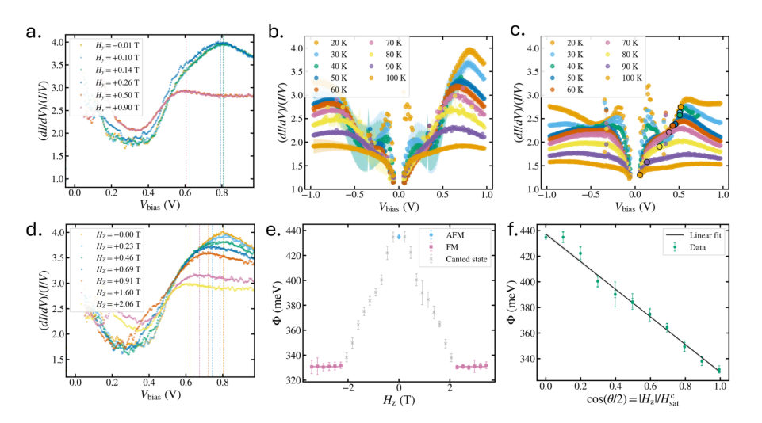
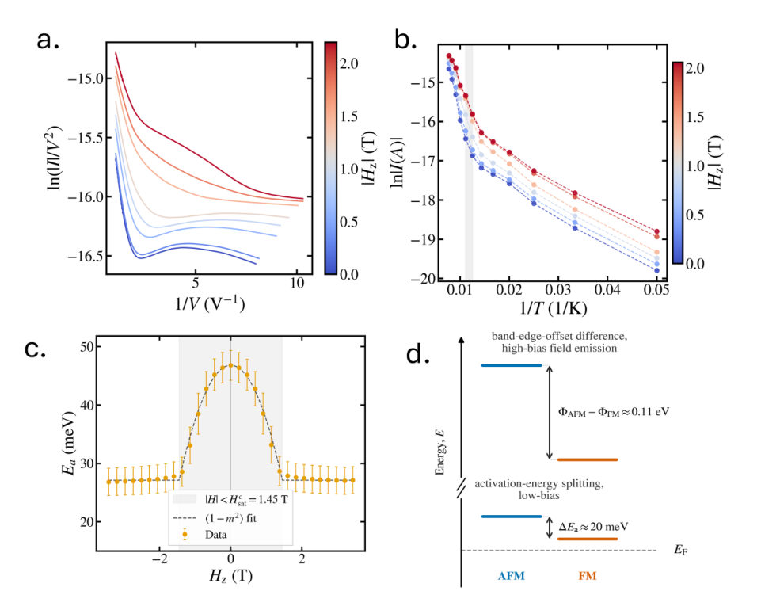
Summary. This work investigates large magnetoresistance in $ ext{CrSBr}$-based van der Waals heterostructures by measuring transport properties as a function of applied magnetic field angle. The key finding is that the MR mechanism stems from a band edge offset that changes linearly with the cosine of half the magnetization angle, confirming spin-dependent interlayer hybridization rather than simple electrode polarization effects.
Why it may be interesting. While focused on solid-state magnetism, the precise mapping of energy levels (band edge shifts) based on magnetic configuration provides insights into spin-dependent coupling mechanisms relevant for quantum device engineering.
Main problem. The study aims to elucidate the physical mechanism responsible for large, non-monotonic magnetoresistance (MR) observed in van der Waals antiferromagnetic heterostructures.
Main result. The MR is dictated by a magnetic-configuration-dependent band edge offset, which varies linearly with $\cos( heta/2)$, ruling out models based solely on electrode spin polarization like the Jullière model.
Method. Transport spectroscopy using I-V measurements across varying bias voltages and temperatures, combined with angular dependence analysis of the extracted band-edge offset ($\Phi$).
Model / system. The system is a $ ext{hBN}/ ext{few-layer-graphene}/ ext{CrSBr}/ ext{few-layer-graphene}$ vertical heterostructure, utilizing $ ext{CrSBr}$ as the magnetic semiconductor.
Key observables. Large MR up to 350% with M-shaped bias dependence; linear variation of band-edge offset ($\Phi$) vs. $\cos( heta/2$); temperature evolution of transport regimes (VRH vs. activated).
Important parameters / regimes. Low temperatures ($20 ext{ K}$), magnetic field angle ($ heta$), and bias voltage ($V$).
Assumptions / limitations. The transport is dominated by tunneling/hopping limited by the band-edge barrier of $ ext{CrSBr}$.
Figures summary. Figures show I-V sweeps, MR vs. V plots exhibiting M-shapes, and crucial angular dependence plots demonstrating the linear fit of the band-edge offset against $\cos( heta/2)$.
Paper structure. The paper establishes the large MR phenomenon, uses continuous field variation along the hard axis to map the band-edge offset ($\Phi$) as a function of magnetization angle ($ heta$), and analyzes this angular dependence to rule out competing theoretical models.
We explore the large magnetoresistance (MR) in \ce{hBN}/few-layer-graphene/\ce{CrSBr}/few-layer-graphene heterostructures and reveal the mechanism behind its non-monotonic bias dependence. Using bias voltage and temperature as independent tuning knobs, we achieve MR up to \SI{350}{\percent} at \SI{20}{K}, characterized by symmetric M-shaped maxima around $\pm 0.5\,\mathrm{V}$. Continuous tuning of the magnetization angle $θ$ via a hard-axis magnetic field shows that the barrier band-edge offset varies linearly with $\cos(θ/2)$, a first-order signature of spin-dependent interlayer hybridization. This linear relationship rules out the Jullière model and a spin-filter projection. We conclude that the magnetic-configuration-dependent band edge, rather than electrode spin polarization, dictates the large magnetoresistance in \ce{CrSBr} junctions.
Authors: D. Pescia
Type: theory · Category: statistical mechanics · PDF: https://arxiv.org/pdf/2608.12189v1
Analysis basis: full PDF text, analyzed in chunks
Topic relevance: non-equilibrium universality 1/5
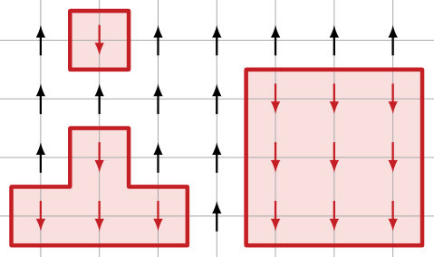
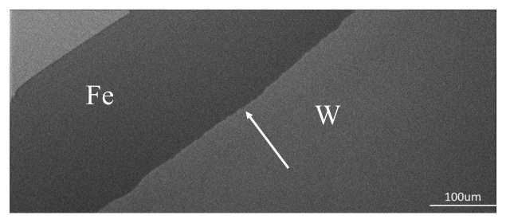
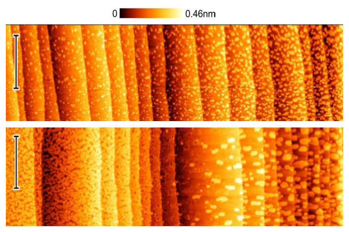
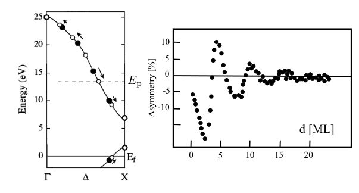
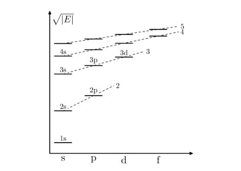
Summary. This lecture reviews ferromagnetism in ultrathin films, treating them as quasi-two-dimensional magnetic systems. It details how dimensionality dictates unique properties like oscillatory coupling and specific types of magnetic anisotropy. The theoretical analysis uses Renormalization Group techniques to describe phase transitions, linking the physics to established models like the 2D Ising universality class.
Why it may be interesting. The application of RG theory to finite-temperature phase transitions in low-dimensional quantum systems is a core concept relevant to understanding critical dynamics in many-body physics, bridging statistical mechanics with condensed matter magnetism.
Main problem. The paper reviews fundamental principles governing ferromagnetism in ultrathin films, focusing on how reduced dimensionality profoundly impacts magnetic properties.
Main result. It establishes that the 2D nature leads to unique ground state behaviors, predicting phenomena like oscillatory coupling and phase transitions governed by universality classes such as the 2D Ising model.
Method. The analysis relies heavily on theoretical frameworks including Landau theory for free energy, Renormalization Group (RG) techniques for critical behavior, and models addressing thermal fluctuations in low dimensions.
Model / system. The system studied is ultrathin films of 3d transition metals grown layer-by-layer. These systems behave as effectively two-dimensional magnetic quantum wells, exhibiting phenomena like 'dead' layers and perpendicular anisotropy.
Key observables. Spontaneous magnetization ($M_s$), magnetic anisotropy (perpendicular vs. in-plane), oscillatory interlayer coupling, and the critical exponents near phase transitions.
Important parameters / regimes. Film thickness (ultrathin limit), temperature relative to $T_c$, and dimensionality (2D confinement).
Assumptions / limitations. The analysis often employs approximations like mean field theory or assumes specific universality classes for phase transitions, though the stripe transition remains incompletely understood.
Figures summary. Figures illustrate the Helmholtz free energy ($F(M)$) vs. magnetization ($M$) to distinguish between equilibrium and metastable states, showing characteristic hysteresis loops in $M$ vs. applied field ($B$).
Paper structure. The paper progresses by introducing the physical system (ultrathin films), detailing key magnetic phenomena (anisotropy, coupling), developing theoretical tools (Landau/RG), and finally analyzing specific transitions like the loss of ferromagnetic order.
In these Lecture Notes we review some of the fundamental principles that have emerged from research on the ferromagnetism of ultrathin films consisting of 3d transition-metal overlayers. Their growth is often layer-by-layer. This growth mode produces quantum wells along the vertical direction that profoundly impact any physical property of the materials. In addition, the vertical confinement establishes spin ensembles that extend to macroscopic distances along the in-plane directions and are finite along the vertical (perpendicular) direction, i.e. they are two-dimensional. Accordingly, they display ground state properties that originate from the two-dimensionality, such as dead'' magnetic layers orenhanced magnetic moments'', an oscillatory interlayer magnetic coupling and an anomalous perpendicular versus in-plane magnetic anisotropy that produces, in some specific situations, a perpendicular collective orientation of the spins. At finite temperatures, ferromagnetic order is observed to persist and an analysis of the magnetic order of ultrathin films in terms of the renormalization group provides a suitable framework for explaining this observation. The ferromagnetic order is lost at a phase transition which follows closely the two-dimensional Ising universality class, as shown by an accurate analysis of data in the vicinity of the critical point. The perpendicular spin orientation is often observed to turn in-plane by a reorientation phase transition which is also properly described by a renormalization group argument. Finally, the perpendicular spin orientation introduces topological excitations of the ferromagnetic order, consisting of stripes of reversed perpendicular spin direction. The stripe order undergoes a phase transition to the paramagnetic state that is not yet completely understood.
Authors: Jingying Zhang, Sigang Wang, Yue Xiang, Wenhui Xie, Zhe Yuan, Yi Liu, Zongzhi Zhang
Type: both · Category: other · PDF: https://arxiv.org/pdf/2608.11897v1
Analysis basis: full PDF text, analyzed in chunks
Topic relevance: Keldysh / 2PI / non-Gaussian methods 1/5
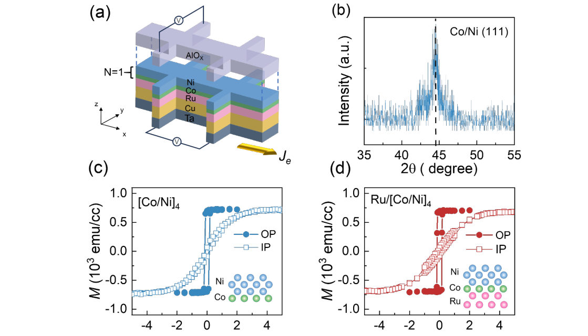
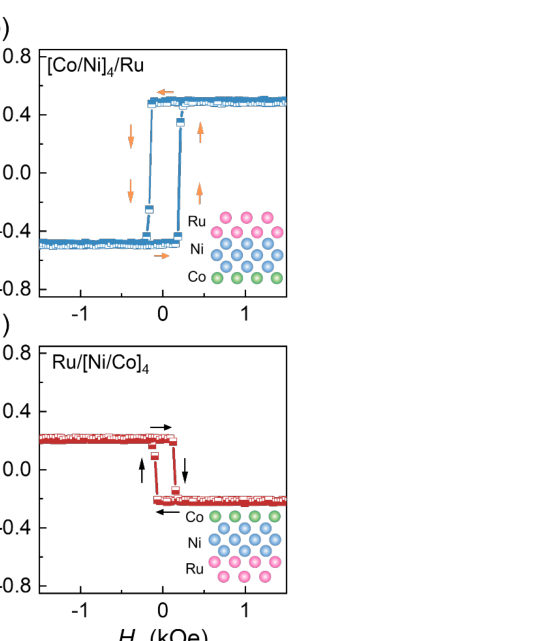
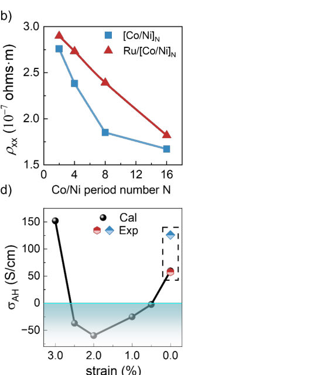
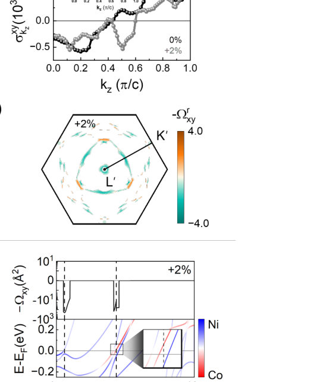
Summary. This research demonstrates that placing a Ruthenium underlayer beneath Co/Ni multilayers can induce a dramatic sign reversal in the Anomalous Hall Effect. This effect is experimentally linked to tensile strain generated by lattice mismatch, which theoretical calculations confirm reshapes the electronic band structure and redistributes Berry curvature, offering a new pathway for strain-controlled topological transport.
Why it may be interesting. While focused on magnetism, the concept of using controlled lattice strain (a structural parameter) to tune topological transport properties like Berry curvature is highly relevant to engineering quantum materials and simulating emergent phenomena in condensed matter theory.
Main problem. The study investigates how strain, specifically induced by an underlayer, can control the sign of the Anomalous Hall Effect (AHE) in magnetic multilayers.
Main result. Introducing a Ru underlayer causes a robust sign reversal of the AHE from positive to negative, which is theoretically attributed to tensile in-plane strain reshaping the electronic structure and Berry curvature near the Fermi level.
Method. The work combines experimental transport measurements (measuring anomalous Hall resistivity) with first-principles density functional theory (DFT) calculations that incorporate lattice strain effects.
Model / system. The physical system is $ ext{Ru}/[ ext{Co}/ ext{Ni}]_N$ multilayers, characterized by a strong (111) crystallographic texture and exhibiting perpendicular magnetic anisotropy. The theoretical modeling uses DFT to calculate the anomalous Hall conductivity ($\sigma_{AH}$) under varying strain.
Key observables. Anomalous Hall resistivity ($ ho_{AH}$), Anomalous Hall Conductivity ($\sigma_{AH}$), Berry curvature distribution, and lattice strain ($\epsilon$).
Important parameters / regimes. Multilayer repeat number ($N$), the presence/position of the Ru layer (underlayer vs. capping layer), and the magnitude of tensile in-plane strain.
Assumptions / limitations. The sign reversal is primarily due to lattice mismatch inducing tensile strain, rather than simple interfacial atomic intermixing or current shunting effects.
Figures summary. Figures show $ ho_{AH}$ hysteresis loops demonstrating opposite polarities based on Ru placement. Theoretical figures illustrate the dependence of $\sigma_{AH}$ on strain and map out the sign reversal of Berry curvature contributions in momentum space ($k_z$).
Paper structure. The paper establishes the experimental observation of AHE sign reversal upon placing Ru under the Co/Ni stack, contrasts this with capping layers, and then uses DFT calculations to microscopically prove that tensile strain modifies the electronic bands, leading to a Berry curvature-driven sign change.
The anomalous Hall effect (AHE) is a hallmark transport phenomenon in ferromagnets arising from relativistic spin-orbit interaction. Here, we report an unexpected sign reversal of the AHE in Ru/[Co/Ni]$_N$ multilayers controlled by the stacking sequence of the Ru layer. When Ru is placed beneath, rather than atop, the Co/Ni multilayers, the anomalous Hall signal switches from positive to negative. By systematically varying the multilayer repeat number N and combining transport measurements with first-principles calculations, we show that this reversal originates from in-plane tensile strain imposed by the Ru underlayer, which reshapes the electronic structure and redistributes Berry curvature near the Fermi level. Our findings establish interfacial strain as an effective knob for tuning Berry-curvature-driven transport and suggest a pathway toward strain-controlled topological transport phenomena in magnetic multilayers.
Authors: Zeyu Li, Xudong Zhu, Yulei Han, Zhenhua Qiao
Type: theory · Category: other · PDF: https://arxiv.org/pdf/2608.11855v1
Analysis basis: full PDF text, analyzed in chunks
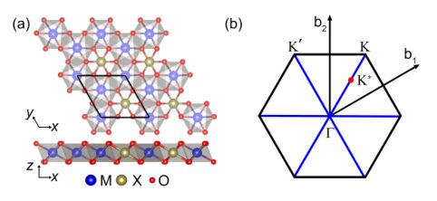
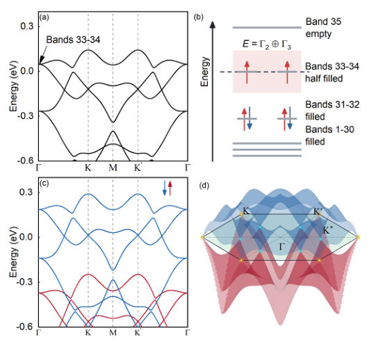
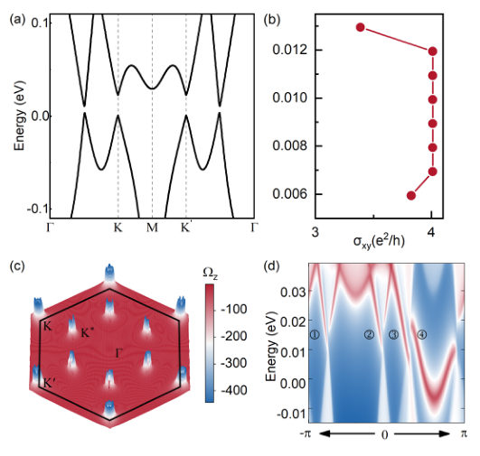
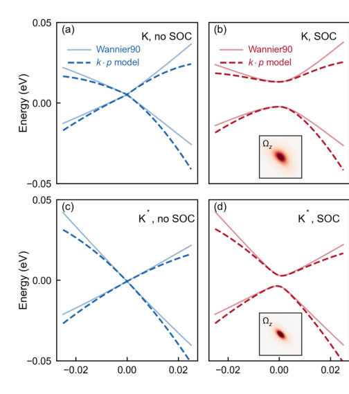
Summary. This work proposes that Quantum Anomalous Hall Effect can be achieved in 2D oxide monolayers ($ ext{M}_2 ext{DO}_6$) by inducing ferromagnetism solely through the $ ext{O-}2p$ orbitals. By simulating cation deintercalation, the authors demonstrate a robust pathway to realize a high-Chern-number QAHE phase with $\mathcal{C}=4$, opening new design principles for magnetic topological insulators beyond conventional $d$-electron systems.
Why it may be interesting. While focused on solid-state magnetism, the concept of engineering topological phases using orbital physics—specifically leveraging $ ext{O-}2p$ states rather than transition metal $d$-orbitals—provides a novel paradigm for designing artificial quantum materials relevant to condensed matter theory.
Main problem. The primary goal is realizing the Quantum Anomalous Hall Effect (QAHE) using a mechanism distinct from traditional partially filled transition-metal $d$ orbitals or correlation-driven moiré bands.
Main result. The authors propose that cation deintercalation in $ ext{M}_2 ext{DO}_6$ oxides can induce half-filled $ ext{O-}2p$ ferromagnetism, leading to a high-Chern-number QAHE phase with a Chern number of $\mathcal{C}=4$.
Method. The study employs first-principles calculations (DFT) combined with effective low-energy $k\cdot p$ modeling to analyze the electronic and topological properties.
Model / system. The physical system is the two-dimensional oxide monolayer $ ext{M}_2 ext{DO}_6$ ($ ext{M} = ext{Zn}, ext{Cd}$; $ ext{D} = ext{Se}, ext{Te}$), where magnetism originates from the half-filled $ ext{O-}2p$ orbital after cation deintercalation.
Key observables. Spin-polarized Dirac points at K/K′ valleys, a high Chern number ($\mathcal{C}=4$), and quantized anomalous Hall conductance ($\sigma_{xy} = 4e^2/h$).
Important parameters / regimes. The spontaneous ferromagnetism is driven by the $ ext{O-}2p$ manifold; the gap opening due to SOC results in a measurable spin polarization gap (e.g., $0.5-0.6 ext{ eV}$).
Assumptions / limitations. The mechanism relies on the feasibility of cation deintercalation and projecting the full $ ext{O-}p$-orbital Hamiltonian onto an effective two-band model near Dirac crossings.
Figures summary. Figures illustrate the crystal structures, nonmagnetic vs. spin-polarized band structures showing gap opening, and schematics confirming the high Chern number plateau ($\sigma_{xy} = 4e^2/h$).
Paper structure. The paper first identifies the limitations of existing QAHE mechanisms, then proposes $ ext{M}_2 ext{DO}_6$ as a novel platform. It details how cation deintercalation activates $ ext{O-}2p$ ferromagnetism, calculates the resulting topological properties (Dirac points and Chern number), and concludes by establishing this general design principle for oxygen-based magnetic topology.
Quantum anomalous Hall effect (QAHE) arises from the interplay between magnetic order and spin-orbit coupling, which opens up a topologically nontrivial band gap to host chiral edge states in the absence of magnetic field. So far, magnetic order of QAHE usually originates from partially filled transition-metal $d$ orbitals or correlation-driven moiré bands. Here, we propose an experimentally accessible family of two-dimensional oxides, M$_2$DO$_6$ (M = Zn, Cd; D = Se, Te), that can realize QAHE from the half-filled O-$2p$ orbital induced spontaneous ferromagnetism. In M$_2$DO$_6$ monolayers, spin-polarized Dirac points appear at K/K$^{\prime}$ valleys and along $Γ$-K/$Γ$-K$^{\prime}$ lines. $C_3$ rotational symmetry then generates eight symmetry-related crossings in the first Brillouin zone. Upon gap opening by spin-orbit coupling, each massive Dirac point contributes half Chern number, resulting in a high-Chern-number QAHE phase with $\mathcal{C}=4$. We establish cation deintercalation as a general strategy to activate O-$2p$ ferromagnetism in oxides. Our finding provides a route to realize QAHE from O-$2p$ ferromagnetism and offers design principles applicable to oxygen-based magnetic topology platforms beyond conventional $d$-electron systems.